Actual hidden application renders using invented notebook content. The fixed baseline retains literal fences; the new immutable library adds actor figures, chronological notes, message numbers, unheaded messages and default flow direction. These images establish only the pictured scenarios, not full Mermaid or performance qualification.
Exact source, dependency, executable and image identities are in evidence.json; scope and remaining gates are in README.md.
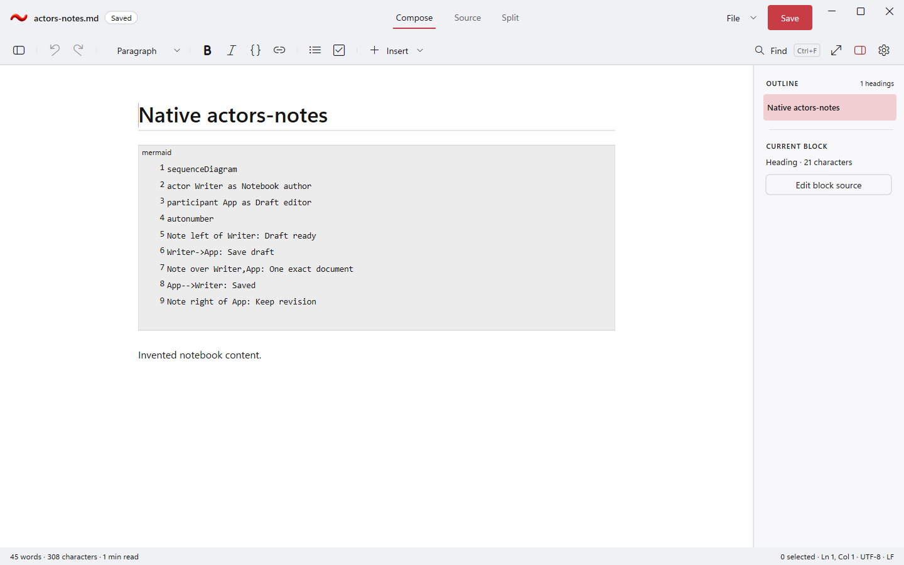
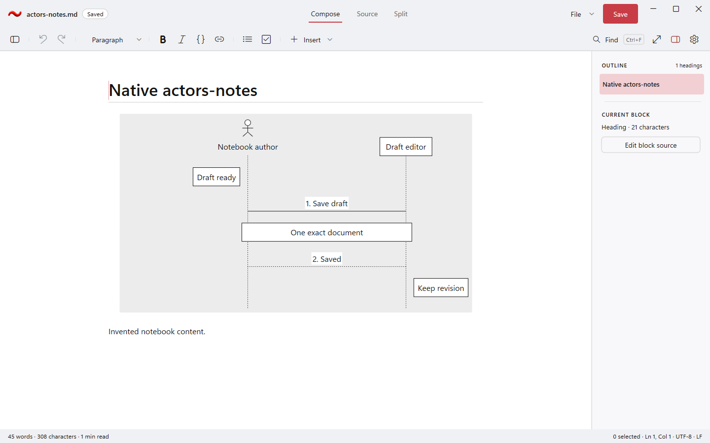
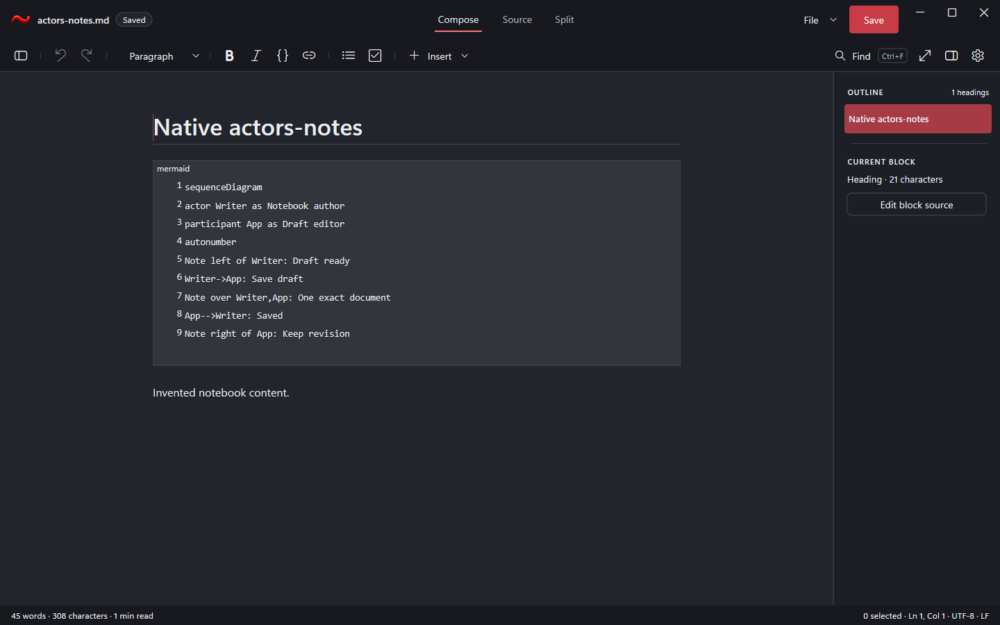
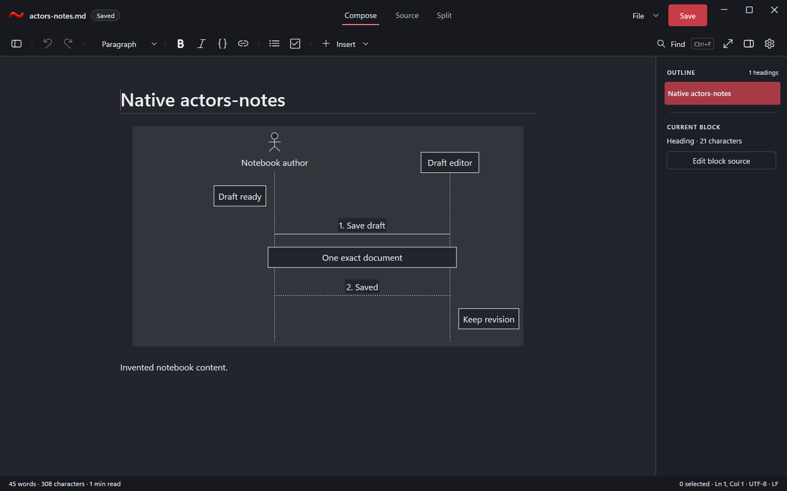
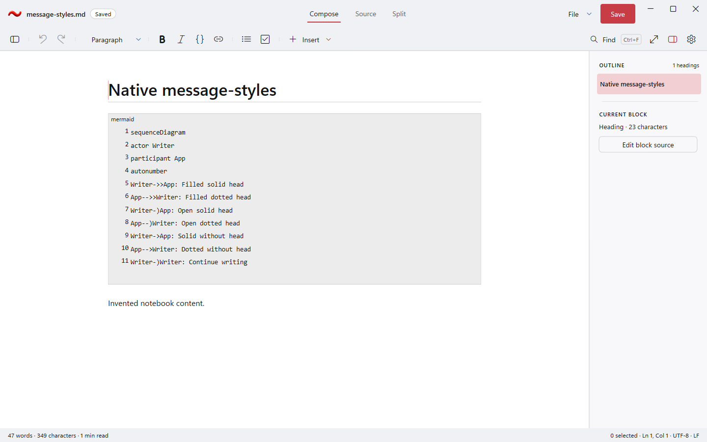
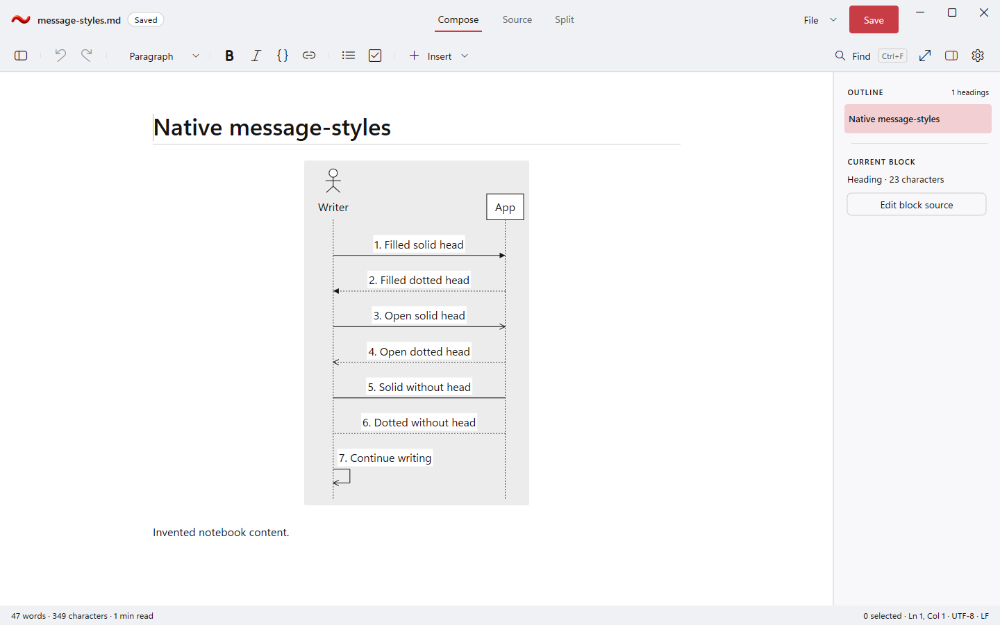
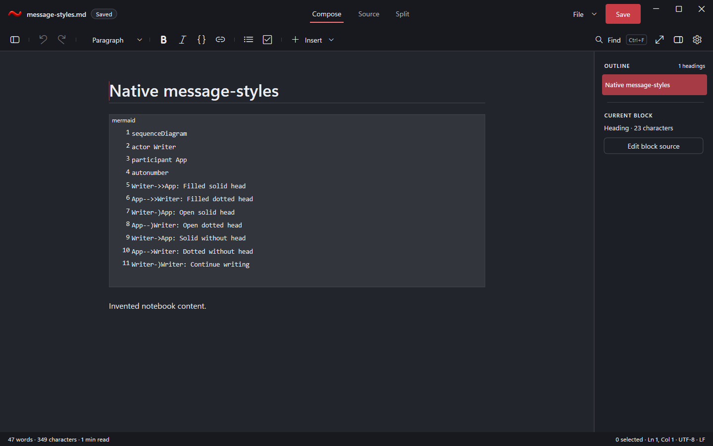
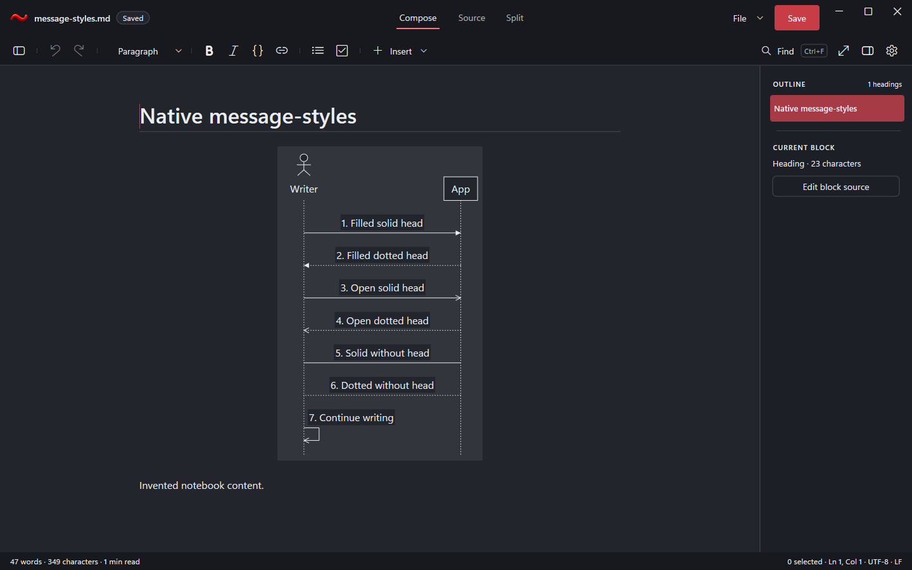
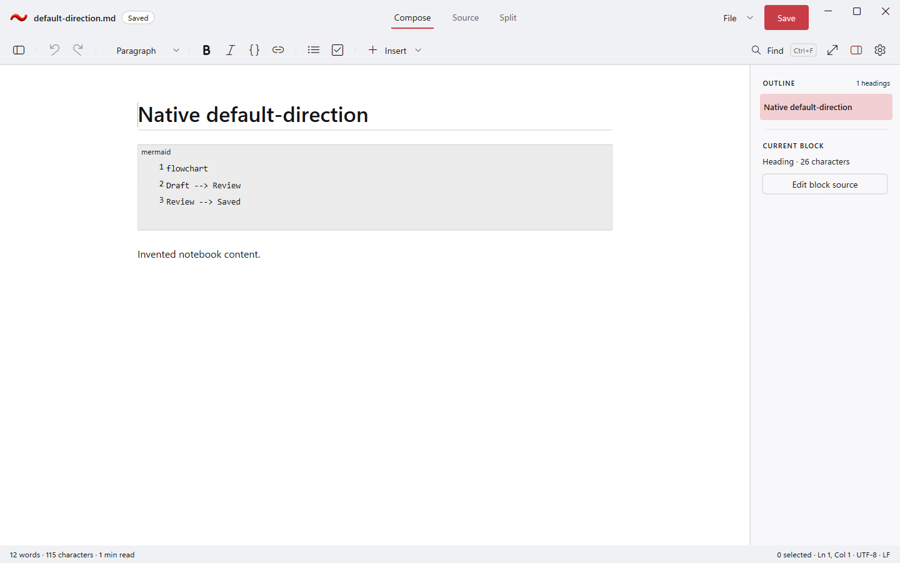
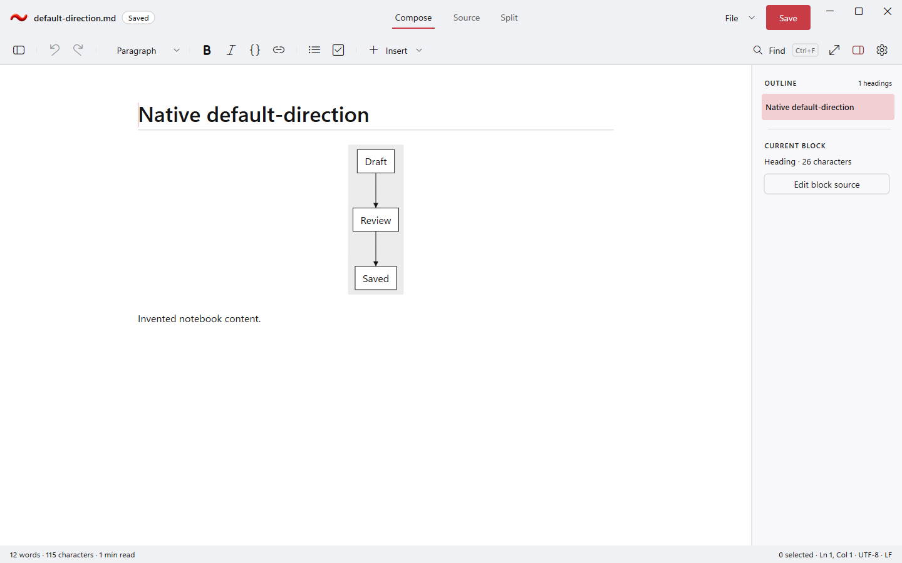
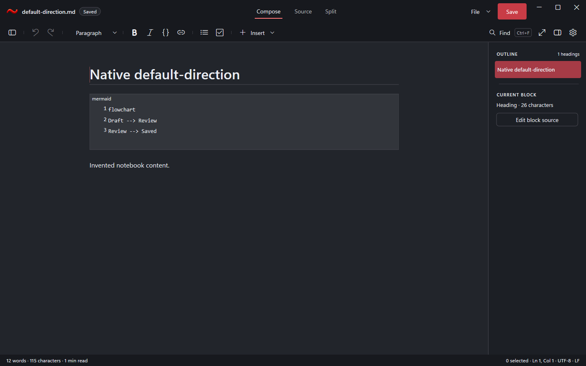
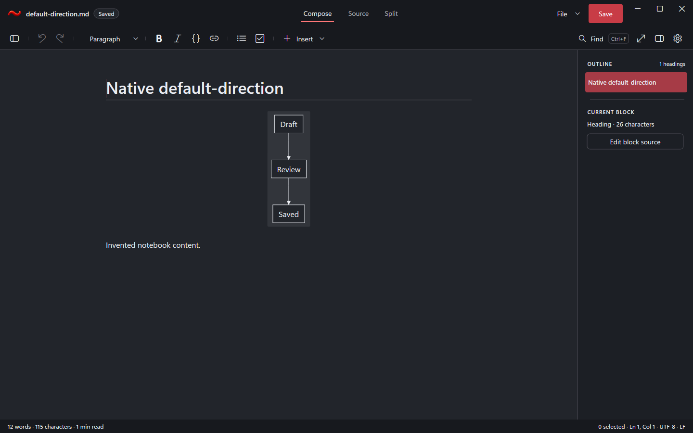
The separately passed syntax checkpoint exposed faint default connections and outlines. The final shared fix uses foreground ink; authored palettes keep their own contrast checks.
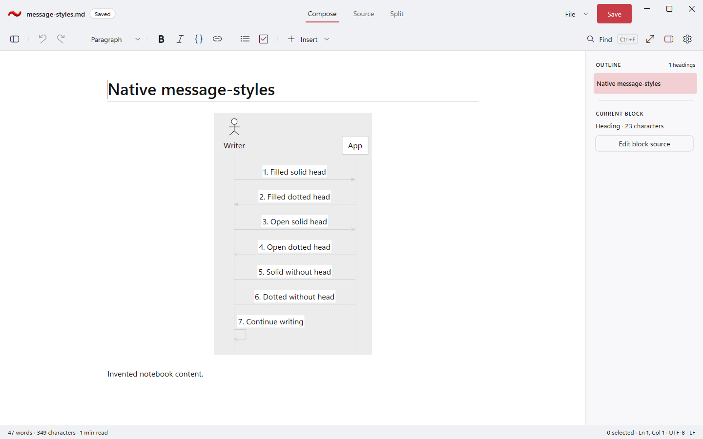